Testbericht 12 – Korrekturen Farben und Daemon
1 Auftrag und Ergebnis
Ein unabhängiger Test-Agent hat die Farbfunktionen aus Bericht 11 geprüft und neun Befunde (F1–F9) sowie einen Daemon-Fehler gemeldet (tests/farben-pruefung/README.md, Testfälle in cases/, Bilder in img/). Alle Befunde sind behoben; jeder hat einen Regressionstest in Rust, die UI-Befunde zusätzlich in Vitest, Playwright und Tauri-E2E. Die Testfälle der Prüfung laufen vollständig als crates/cad-cli/tests/farben_pruefung.rs (jede Datei: keine Fehler, Regionsvolumen = Bauteilvolumen, Zufallsfarben mit Abstand zur Palette). „Vorher“-Bilder sind die des Prüfers (Commit d8fe983), „nachher“ die CLI und UI dieses Commits.
| Nr. | Schwere | Befund | Status |
|---|---|---|---|
| F1 | hoch | Gleiche Geometrie in verschiedenen Farben: Ansicht und STEP in der ersten Farbe | behoben |
| F2 | hoch | Slotwahl in der UI an einem color() mit Parameter-/Schleifenfarbe färbte alle Farben | behoben (filament()-Tabelle) |
| F3 | mittel | Ansicht ≠ Druck (Überlappung, Verrundung an Farbgrenze, color() im 2D-Profil) | behoben (Regionen in der Ansicht; gemischte 2D-Farben: Warnung) |
| F4 | mittel | Material außerhalb von Bauteilen: UI ließ es weg, CLI-Meldung falsch | behoben |
| F5 | mittel | Zufallsfarben kollidieren | behoben |
| F6 | mittel/niedrig | Splitter bei gleichfarbigen Nachbarn | behoben |
| F7 | niedrig | Alpha-Varianten, stilles Klemmen, transparent, leerer Name | behoben (Regeln + Warnungen) |
| F8 | niedrig | > 16 Slots, geteilte Slots ohne Hinweis, Farbgruppe bei einfarbig | behoben |
| F9 | niedrig | --per-color mit .stl, Farbliste bei --part, Dateiname bei use/include | behoben |
| D | – | Daemon startet bei zu langem Socketpfad still nicht | behoben (Ersatzpfad) |
| B | – | Bambu Studio: Farbdialog überschreibt Slots | vermieden (3MF ohne Farbgruppe) |
2 Befunde
F1 (hoch) – gleiche Geometrie, verschiedene Farben
- Ursache
- Der Cache-Schlüssel eines Knotens enthält die Farbe nicht (Absicht: eine neue Farbe rechnet nichts neu).
color("red") cube(5)undtranslate(…) color("blue") cube(5)haben daher denselben Würfelknoten-Inhalt, dasselbe Flächen-Tag und – aus dem Cache – dieselben Kernel-Flächen. Ansicht (tagColors: Tag → erster Knoten mit Farbe) und STEP (nodes_for_tag(tag).first()) nahmen für alle Flächen dieses Tags die erste Farbe. Das 3MF war richtig, weil die Farbregionen die Instanzen einzeln platzieren. - Korrektur
- Die Cache-Wiederverwendung bleibt; die Farbe wird über Instanzen und Regionen zugeordnet: (1) die Ansicht zeigt bei Modellen mit Farben die Farbregionen (die Körper des 3MF), sobald sie gerechnet sind (UI „Farbregionen zeigen“, jetzt Standard;
cad renderohne--show faces); (2) die Farbe je Fläche (davor, für hervorgehobene Teilbäume und--show faces) nimmt nur Knoten unterhalb des gezeichneten Knotens und unter mehreren gleichen Inhalts den, dessen Hülle das Dreieck enthält (faceColorsinweb/src/logic/colors.ts,face_colorsincad-cli/src/render.rs); (3) STEP-Flächenfarben kommen aus der Regelmenge der Regionen ohne Boolean: Abtastpunkte jeder Fläche gegen das platzierte Material jedes Farbknotens (kernel.classify), der späteste gewinnt (Engine::face_region_colors), als synthetische Tags in einer Kopie der B-Rep. - Tests
f1_equal_geometry_keeps_its_colour_in_view_and_stepok,all_review_cases_evaluate_and_regions_add_upok; Vitest „Bericht 12 F1“; Playwright G01; Tauri T15.
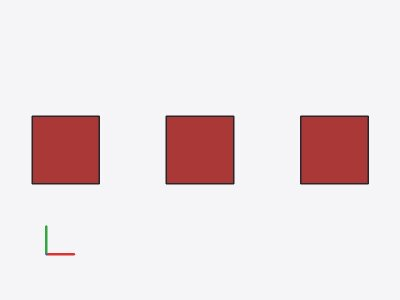
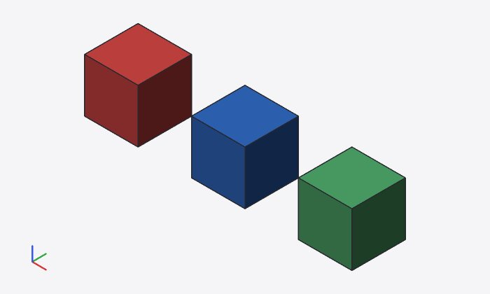
cad render (Farbregionen)
--show faces (Farbe je Fläche je Instanz)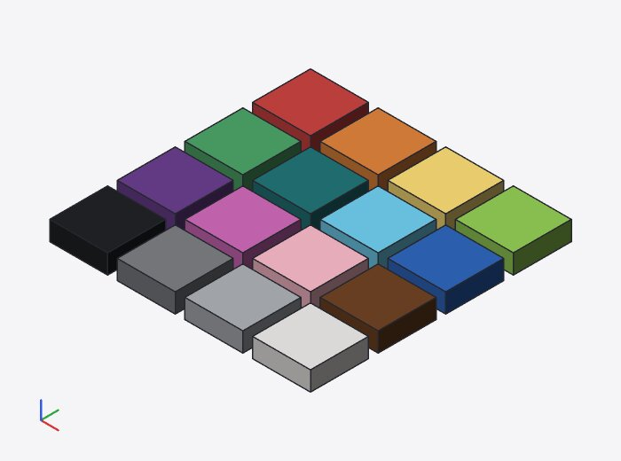
STEP von pal2.scad (Flächen je Farbe):
#2e65b9: 6 Flächen #4ca167: 6 Flächen #c74240: 6 Flächen
Grenze: die Farbe je Fläche ist eine Näherung (Hüllen-Test; bei überlappenden Hüllen gleich geformter Körper verschiedener Farbe die spätere). Exakt sind die Regionen, die die Ansicht nach der Rechnung zeigt; in STEP bekommt eine über eine Farbgrenze verschmolzene Fläche eine Farbe (Mehrheit der Abtastpunkte).
F2 (hoch) – Slotwahl bei Parameter- oder Schleifenfarbe
- Ursache
SetFilamentschriebfilament = nan die erstecolor()-Anweisung der Farbe. Beimodule bar(c) color(c) …oderfor (i) color(names[i]) …färbt diese Anweisung mehrere Farben – alle bekamen den Slot (bzw. die erste Angabe gewann mit Warnung).- Entscheidung
- Eine Slot-Tabelle im Code:
filament("red", 4);auf oberster Ebene der Hauptdatei, eine Anweisung je Farbe. Begründung: der Code bleibt die einzige Quelle (CLI und UI exportieren dasselbe, Undo/Git sehen die Änderung, ein Agent liest es mit); die Tabelle gilt für genau eine Farbe und ist unabhängig davon, wo die Farbe entsteht (Parameter, Schleife, Bibliothek); es ist ein gewöhnlicher Modulaufruf (keine neue Syntax, OpenSCAD meldet nur ein unbekanntes Modul); ein Blockfilaments { … }bräuchte Parser-Änderungen,$filaments = […]hätte die Gültigkeitsregeln von$-Variablen und ließe sich an jeder Stelle überschreiben. Die UI schreibtfilament = nweiter an die Anweisung, wenn alle Anweisungen der Farbe sie als Literal nennen (lesbar am Ort), sonst die Tabellenzeile; gibt es eine Tabellenzeile, ändert sie deren Slot, „automatisch“ entfernt die Zeile. - Regeln
- Die Tabelle wird vor allen anderen Anweisungen ausgewertet (eigener Durchlauf) und hat Vorrang; ein widersprechendes
filament = mwarnt und wird ignoriert;filament()in Modulen, Schleifen oder Bibliotheken warnt („nur auf oberster Ebene der Hauptdatei“); ein eigenes Modulfilamentdes Nutzers hat Vorrang. - Tests
filament_declarationsok,filament_table_rulesok,set_filament_of_a_parameter_colour_writes_a_tableok; Playwright G02; Tauri T15.
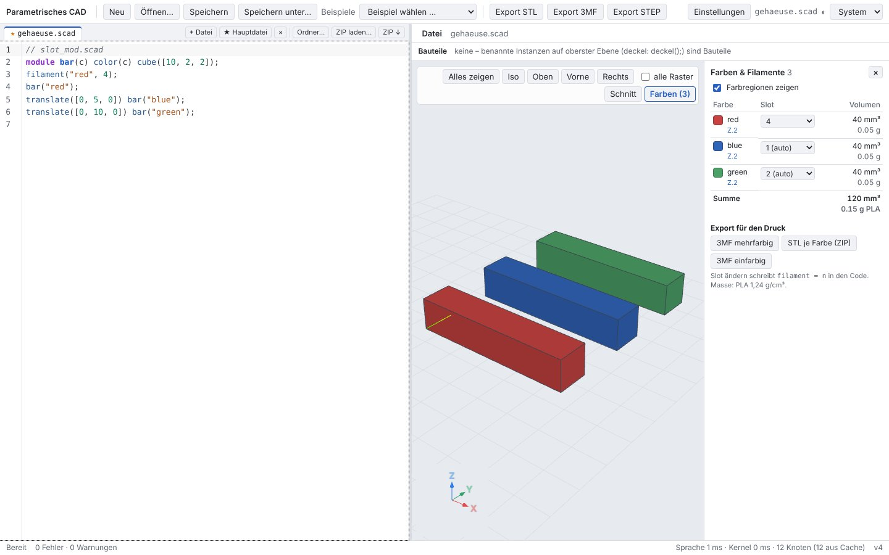
filament("red", 4); im Code, blue und green automatisch (vorher bekamen alle drei Slot 4)cad outline der Datei mit Tabelle:
Farben (Filament, Farbe, Volumen, Masse PLA 1,24 g/cm³): F4 red #c74240 40 mm³ 0.05 g Z.1 filament = 4 F1 blue #2e65b9 40 mm³ 0.05 g Z.1 F2 green #4ca167 40 mm³ 0.05 g Z.1
F3 (mittel) – Ansicht ≠ Druck
- Ursache
- (a) Bei Überlappung verschmilzt der Kernel koplanare Flächen beider Körper zu einer Fläche mit einem Tag – die Farbe je Fläche kann die Farbgrenze nicht zeigen. (b) Die Verrundung an einer Farbgrenze gehört dem ungefärbten
union-Knoten (grau gezeigt), die Regionen geben sie der Restfarbe (rot). (c)color()im 2D-Profil: die Ansicht zeigte die Farbe des 2D-Blatts, die Farbtabelle sah unter Profiloperationen nicht nach (Standard, ohne Eintrag, ohne Warnung). - Korrektur
- (a, b) Die Ansicht zeigt die Farbregionen (F1). (c) Haben alle 2D-Blätter einer Extrusion ohne eigene Farbe dieselbe Farbe, ist die Extrusion ein Körper dieser Farbe (wie
color()um sie); gemischte 2D-Farben werden nicht getrennt: ein Körper in Standard und die Warnung „Farben im 2D-Profil von linear_extrude werden nicht getrennt …“. - Tests
f3_view_matches_the_printok; Playwright G03.
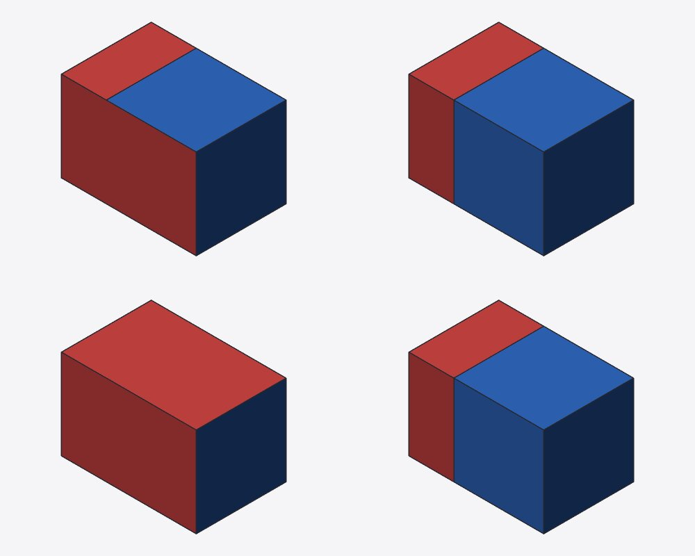
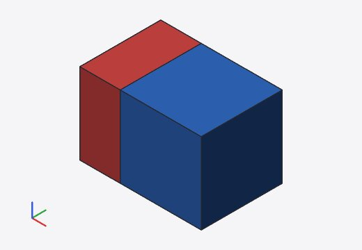
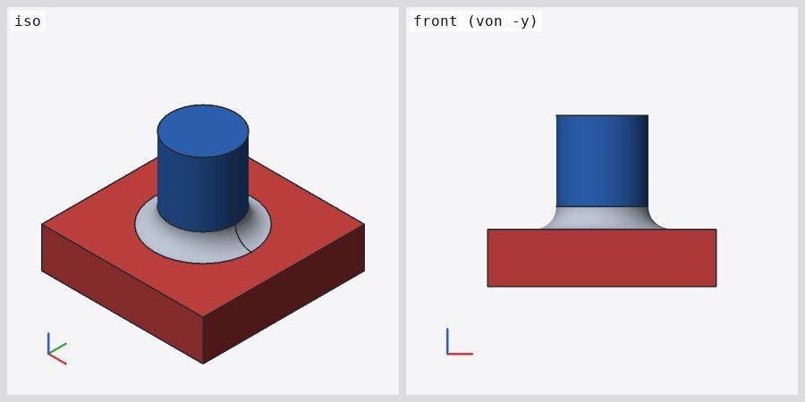
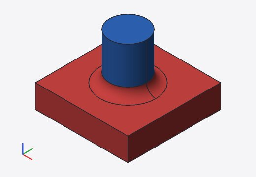
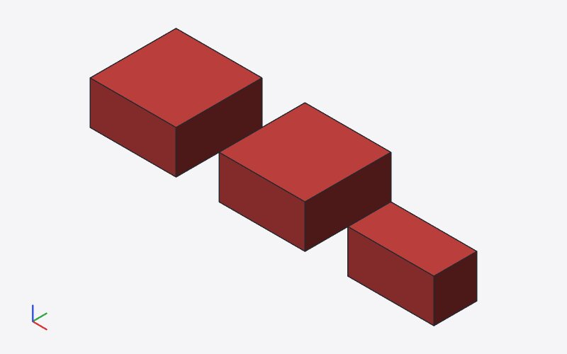
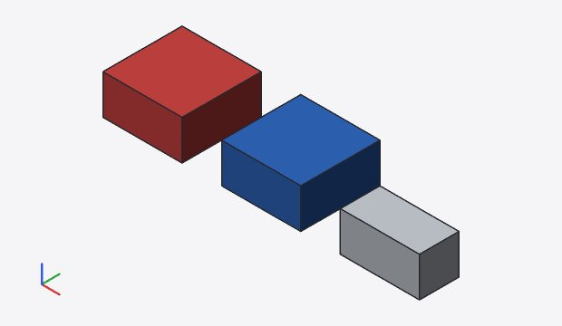
tests/farben-pruefung/cases/r_extrude.scad:3:21: Warnung (Auswertung): Farben im 2D-Profil von linear_extrude werden nicht getrennt: der Körper druckt als Standard – color() um die Extrusion setzen oder je Farbe extrudieren Farben (Filament, Farbe, Volumen, Masse PLA 1,24 g/cm³): F1 Standard #c3c8cf 250 mm³ 0.31 g (ohne color()) F2 red #c74240 500 mm³ 0.62 g Z.1 F3 blue #2e65b9 500 mm³ 0.62 g Z.2
Grenze: gemischte Farben in einem 2D-Profil unter einer Extrusion werden nicht in Körper je Farbe geteilt (Warnung; Abhilfe: je Farbe extrudieren).
F4 (mittel) – Material außerhalb von Bauteilen
- Ursache
- Farbliste und UI-Export nahmen nur die Bauteile (Rest: 0 mm³, im 3MF weggelassen); der CLI-Export ohne
--partnahm die Wurzel als ein Objekt und meldete trotzdem „je Bauteil ein Objekt“. - Korrektur
- Die Regionen umfassen die Bauteile und die obersten Knoten, die weder Bauteil sind noch eines enthalten („ohne Bauteil“,
cad_session::rest_nodes); der Standard-Export (CLI ohne--partund UI, beideSession::export_colors) schreibt je Bauteil ein Objekt und das Objekt „ohne Bauteil“ – die Dateien von CLI und UI sind gleich. Die Meldung zählt die Objekte auf (color_export_notes), die UI zeigt sie in der Statuszeile. - Tests
f4_material_outside_partsok,material_outside_parts_is_exportedok; Playwright G04; Tauri T15.
tests/farben-pruefung/cases/inc/lib.scad:2:22: Warnung (Auswertung): Farbe `rosarot` unbekannt – Zufallsfarbe (Palette: red, orange, yellow, lime, green, teal, cyan, blue, purple, magenta, pink, brown, black, gray, silver, white) main_use.3mf: 792 Dreiecke, 55988 Bytes, Volumen 1204.3893 mm³ 3MF mehrfarbig: 3 Objekte (teil, deko, ohne Bauteil), 6 Teile (eines je Farbe und Objekt); Material außerhalb der Bauteile ist ein eigenes Objekt „ohne Bauteil“; Filament-Slots in Metadata/model_settings.config, ohne Farbgruppe: Bambu Studio und OrcaSlicer übernehmen die Slots ohne Farbdialog (einfarbig: --single-color) Farben (Filament, Farbe, Volumen, Masse PLA 1,24 g/cm³): F1 white #f4f3f0 600 mm³ 0.74 g Z.2 F2 red #c74240 150.7964 mm³ 0.19 g lib.scad:1 F3 teal #217274 301.5929 mm³ 0.37 g lib.scad:1 F4 rosarot #959d3b 27 mm³ 0.03 g lib.scad:2 (unbekannter Name: Zufallsfarbe) F5 yellow #f7d974 125 mm³ 0.16 g Z.6 teil: F1 white 600 mm³, F2 red 150.7964 mm³, F3 teal 150.7964 mm³, F4 rosarot 27 mm³ deko: F3 teal 150.7964 mm³ ohne Bauteil: F5 yellow 125 mm³
F5 (mittel) – Zufallsfarben kollidieren
- Ursache
- Nur der Farbton kam aus dem Hash (L, C fest): Namen fielen auf denselben Wert (
baz/violet,x/rose) und wurden zu einem Eintrag und Slot zusammengelegt; andere lagen nah an Palettenfarben. - Korrektur
- Farbton, Helligkeit (0,45–0,80) und Chroma (0,06–0,16) aus dem Hash; eine Kandidatenfolge je Name (SplitMix64); gewählt wird der erste Kandidat mit ΔEOK ≥ 0,07 zu Palette und Standard und – im Modell, in Reihenfolge des ersten Auftretens – ≥ 0,06 zu den Zufallsfarben anderer Namen. Verschiedene Namen fallen so nie zufällig zusammen; zusammengelegt wird nur bei exakt gleichem Wert (z. B.
"#f00"und[1, 0, 0]). - Nachweis
- randnames.scad: 34 unbekannte Namen (36 Anweisungen, rot/Rot/ROT ist ein Name), 34 Einträge auf 34 verschiedenen Slots; kleinster Abstand zweier Zufallsfarben ΔEOK 0,060 (gelb/violet), zur Palette 0,071 (rot ↔ #c74240).
- Tests
f5_random_colours_keep_their_distanceok,random_colours_do_not_collide_in_a_modelok.
rot · grün · blau · gelb · lightblue · darkred · navy · olive · maroon · coral · salmon · gold · violet · indigo · beige · tan · khaki · crimson · turquoise · lavender · mint · rose · foo · bar · baz · x · y · z · petrol · schwarz · weiss · orange2 · red2 · blue1
Grenze: weicht ein Name im Modell aus, hängt seine Farbe von den Namen davor ab (deterministisch, aber nicht modellübergreifend gleich).
F6 – Splitter bei gleichfarbigen Nachbarn
- Ursache
Stück(C) = R ∩ M(C) − ⋃ M(später)zog auch einen berührenden späteren Körper derselben Farbe ab; an der Berührfläche blieben dünne Splitter (0,00016 mm), die nach dem Vereinigen überlappten: r_touch.scad rot 2000,032 statt 2000 mm³, ohne Warnung.- Korrektur
- Abgezogen wird nur das Material späterer Farbknoten anderer Farbe; die Stücke einer Farbe werden wie bisher vereinigt. Die Zuordnung ist dieselbe (gleiche Farbe), die Splitter entfallen.
- Tests
f6_no_slivers_between_same_coloured_neighboursok,all_review_cases_evaluate_and_regions_add_upok (alle Fälle: Summe = Volumen auf 10⁻⁶).
Farben (Filament, Farbe, Volumen, Masse PLA 1,24 g/cm³): F1 red #c74240 2000 mm³ 2.48 g Z.1, Z.2 F2 blue #2e65b9 1000 mm³ 1.24 g Z.3
F7 – Alpha, Klemmen, transparent, leerer Name
- Regeln
- Die Identität einer Druckfarbe ist ihr RGB-Wert:
alphawirkt nur in der Ansicht (die Farbregion wird transparent gezeichnet),color("red", alpha = 0.5)ist der Eintragred(ein Slot, die Konfliktprüfung sieht über Alpha). Vektorwerte undalphaaußerhalb 0–1 werden mit Warnung geklemmt (bei 0–255-Werten mit Hinweis auf"#rrggbb").color("transparent")ist keine Druckfarbe: Warnung, das Material bleibt Standard (kein Filament#00000000);color("")undcolor()warnen und färben nicht. - Tests
f7_value_rulesok.
tests/farben-pruefung/cases/values.scad:8:27: Warnung (Auswertung): Farbwerte liegen zwischen 0 und 1 (wie in OpenSCAD), andere werden geklemmt – für Werte 0–255 "#ff0000" schreiben tests/farben-pruefung/cases/values.scad:9:27: Warnung (Auswertung): Farbe muss Name oder [r, g, b, a] sein tests/farben-pruefung/cases/values.scad:10:27: Warnung (Auswertung): Farbe muss Name oder [r, g, b, a] sein tests/farben-pruefung/cases/values.scad:11:27: Warnung (Auswertung): `#12345` ist keine Farbe (#rgb, #rrggbb, #rrggbbaa oder Name) tests/farben-pruefung/cases/values.scad:12:27: Warnung (Auswertung): `#ggg` ist keine Farbe (#rgb, #rrggbb, #rrggbbaa oder Name) tests/farben-pruefung/cases/values.scad:13:27: Warnung (Auswertung): Farbe muss Name oder [r, g, b, a] sein tests/farben-pruefung/cases/values.scad:14:42: Warnung (Auswertung): alpha liegt zwischen 0 und 1, der Wert wird geklemmt tests/farben-pruefung/cases/values.scad:15:27: Warnung (Auswertung): `transparent` ist keine Druckfarbe: das Material bleibt ungefärbt (Standard, Filament 1) tests/farben-pruefung/cases/values.scad:18:27: Warnung (Auswertung): Farbe muss Name oder [r, g, b, a] sein tests/farben-pruefung/cases/values.scad:19:27: Warnung (Auswertung): Farbwerte liegen zwischen 0 und 1 (wie in OpenSCAD), andere werden geklemmt tests/farben-pruefung/cases/values.scad:20:42: Warnung (Auswertung): alpha liegt zwischen 0 und 1, der Wert wird geklemmt tests/farben-pruefung/cases/values.scad:21:42: Warnung (Auswertung): `alpha` muss eine Zahl sein, ist String tests/farben-pruefung/cases/values.scad:22:34: Warnung (Auswertung): `color()` hat keinen Parameter `foo` tests/farben-pruefung/cases/values.scad:23:21: Warnung (Auswertung): color() ohne Farbe hat keine Wirkung Farben (Filament, Farbe, Volumen, Masse PLA 1,24 g/cm³): F1 Standard #c3c8cf 81.845 mm³ 0.1 g (ohne color()) F2 #ff0000 #ff0000 8.11 mm³ 0.01 g Z.1, Z.4, Z.8 F3 #00ff00 #00ff00 1.331 mm³ 0 g Z.2 F4 #0000ff #0000ff 1.728 mm³ 0 g Z.3 F5 #80331a #80331a 6.119 mm³ 0.01 g Z.5, Z.6 F6 teal #217274 4.096 mm³ 0.01 g Z.7 F7 red #c74240 94.354 mm³ 0.12 g Z.14, Z.17, Z.20, Z.21, Z.22 F8 blue #2e65b9 12.5 mm³ 0.02 g Z.16 F9 #008080 #008080 15.68 mm³ 0.02 g Z.19
F8 – Slots über 16, geteilte Slots, einfarbiges 3MF
- Korrektur
- Die Farbtabelle meldet automatische Slots über 16 als Warnung („mehr als 16 Filamente …“), zwei Farben auf demselben festen Slot und einen festen Slot 1 neben Standard als Hinweis (Info). Das 3MF hat keine Farbgruppe mehr (Abschnitt 3), auch nicht mit
--color-groupbei nur einer Farbe. - Tests
f8_slot_remarks_and_single_colourok,color_export::tests::no_color_group_by_defaultok.
tests/farben-pruefung/cases/f1.scad:3:45: Warnung (Auswertung): Farbe hat schon Filament 3 (die erste Angabe gilt), filament = 4 wird ignoriert tests/farben-pruefung/cases/f1.scad:8:47: Warnung (Auswertung): filament muss eine ganze Zahl von 1 bis 16 sein tests/farben-pruefung/cases/f1.scad:9:47: Warnung (Auswertung): filament muss eine ganze Zahl von 1 bis 16 sein tests/farben-pruefung/cases/f1.scad:10:47: Warnung (Auswertung): filament muss eine ganze Zahl von 1 bis 16 sein tests/farben-pruefung/cases/f1.scad:11:48: Warnung (Auswertung): `filament` muss eine Zahl sein, ist String tests/farben-pruefung/cases/f1.scad:13:46: Warnung (Auswertung): Farbe hat schon Filament 3 (die erste Angabe gilt), filament = 5 wird ignoriert tests/farben-pruefung/cases/f1.scad:14:50: Warnung (Auswertung): Farbe hat schon Filament 3 (die erste Angabe gilt), filament = 6 wird ignoriert tests/farben-pruefung/cases/f1.scad:15:59: Warnung (Auswertung): Farbe hat schon Filament 3 (die erste Angabe gilt), filament = 7 wird ignoriert tests/farben-pruefung/cases/f1.scad:4:21: Info (Auswertung): Slot 3 hat schon die Farbe `red`: beide drucken mit demselben Filament tests/farben-pruefung/cases/f1.scad:6:21: Info (Auswertung): Slot 1 druckt auch das Material ohne color() („Standard“) – `yellow` und Standard teilen sich das Filament Farben (Filament, Farbe, Volumen, Masse PLA 1,24 g/cm³): F1 Standard #c3c8cf 125 mm³ 0.16 g (ohne color()) F3 red #c74240 750 mm³ 0.93 g Z.1, Z.2, Z.3, Z.13, Z.14, Z.15 filament = 3 F3 blue #2e65b9 125 mm³ 0.16 g Z.4 filament = 3 F2 green #4ca167 125 mm³ 0.16 g Z.5 F1 yellow #f7d974 125 mm³ 0.16 g Z.6 filament = 1 F4 white #f4f3f0 500 mm³ 0.62 g Z.8, Z.9, Z.10, Z.11 F16 pink #f7b8c6 125 mm³ 0.16 g Z.12 filament = 16
F9 – --per-color, --part, use/include
- Korrektur
--per-colorverlangt die Endung.zip(sonst Exit 2 mit Vorschlag);--per-color --partzeigt nur die Farben und Volumen der gewählten Bauteile; die Farbliste nennt Zeilen anderer Dateien alslib.scad:1(CLI und UI; in der UI öffnet der Klick die Datei an der Stelle).- Tests
f9_per_colour_export_and_listok; Vitest „Bericht 12 F9“.
cad export: --per-color schreibt eine ZIP-Datei mit einem STL je Farbe: -o x.zip tests/farben-pruefung/cases/inc/lib.scad:2:22: Warnung (Auswertung): Farbe `rosarot` unbekannt – Zufallsfarbe (Palette: red, orange, yellow, lime, green, teal, cyan, blue, purple, magenta, pink, brown, black, gray, silver, white) teil.zip: 4 STL (eine je Farbe), 528 Dreiecke, 27156 Bytes Farben (Filament, Farbe, Volumen, Masse PLA 1,24 g/cm³): F1 white #f4f3f0 600 mm³ 0.74 g Z.2 F2 red #c74240 150.7964 mm³ 0.19 g lib.scad:1 F3 teal #217274 150.7964 mm³ 0.19 g lib.scad:1 F4 rosarot #959d3b 27 mm³ 0.03 g lib.scad:2 (unbekannter Name: Zufallsfarbe)
Daemon – Socketpfad länger als die Unix-Grenze
- Ursache
sun_pathfasst 108 Byte (Linux; 107 ohne NUL). Mit einem tiefenCAD_IPC_DIRscheitertebind(„path must be shorter than SUN_LEN“), der Client rechnete still ohne Daemon.- Korrektur
cad_ipc::socket_path_in: ist<dir>/<name>.sockzu lang, liegt der Socket in/tmp/cad-<uid>/<hash>-<name>.sock(Verzeichnis mit denselben Prüfungen: 0700, eigener Benutzer, kein Symlink;hash= FNV-1a des kanonischen Laufzeitverzeichnisses, damit sich mehrere lange Verzeichnisse nicht stören). Sperr- und Logdatei bleiben im Laufzeitverzeichnis;listfindet auch Ersatz-Sockets (UI-Endpunkte);cad daemon statuszeigt den Pfad mit „Ersatzpfad“ (JSONsocket_substitute), das Log nennt ihn.- Tests
long_ipc_dir_uses_short_socket_pathok.
CAD_IPC_DIR: /tmp/tmp.OVFKN13EtA/ein-sehr-langer-verzeichnisname-fuer-den-socket-des-hintergrundprozesses-damit-es-reicht/ipc (124 Byte bis daemon.sock) cad: Daemon gestartet (pid 28107, Log /tmp/tmp.OVFKN13EtA/ein-sehr-langer-verzeichnisname-fuer-den-socket-des-hintergrundprozesses-damit-es-reicht/ipc/daemon.log) cad: Daemon pid 28107: 529 ms, Cache 13 Treffer / 64 neu, 64 Einträge, 7,8 MiB Daemon läuft: pid 28107, Version 0.1.0 (Build 0.1.0+1ebe850.18e1397934aa36b8) Laufzeit 0 s, Leerlauf 0 s (Ende nach 15 min ohne Anfrage), Watchdog 60 s Anfragen: 1, Projekte 1 von 8 (0 verdrängt) Cache: 62 Knoten + 2 Netze/abgeleitete, 7,8 MiB von 512,0 MiB, Trefferquote 17 % (13 Treffer, 64 neu berechnet), 0 verdrängt Speicher (RSS): 54,0 MiB, Start 36,1 MiB, Cache wird geleert über 804,1 MiB (0× geleert) Socket /tmp/cad-0/27d121efb38cc86e-daemon.sock (Ersatzpfad: Pfad im IPC-Verzeichnis länger als 107 Byte), Log /tmp/tmp.OVFKN13EtA/ein-sehr-langer-verzeichnisname-fuer-den-socket-des-hintergrundprozesses-damit-es-reicht/ipc/daemon.log Daemon beendet (pid 28107)
3 Bambu Studio: Farbdialog und Slots
Quellen abgerufen am 23.10.2026 (raw.githubusercontent.com, BambuStudio master, OrcaSlicer main; Prüfsummen in reports/tmp/report12/sources.sha256):
== BambuStudio Plater.cpp: Farbdialog für fremde 3MF
8890: if (load_model && !color_group_map.empty() && !volume_color_data.empty() && en_3mf_file_type != En3mfType::From_BBS) {
== BambuStudio bbs_3mf.cpp: Dreiecksfarben nur aus pid/pindex
5517: if (!m_is_bbl_3mf && sub_object->geometry.triangle_colors.size() == triangles_count) {
4328: if (boost::starts_with(m_curr_characters, "BambuStudio-")) {
== BambuStudio bbs_3mf.cpp: model_settings.config für alle Dateien
1744: else if (boost::algorithm::iequals(name, BBS_MODEL_CONFIG_FILE)) {
2130: else if (boost::algorithm::iequals(name, BBS_MODEL_CONFIG_FILE)) {
== BambuStudio ObjColorDialog.cpp: OK überschreibt extruder
270: m_panel_ObjColor->apply_volume_filament_ids();
647:void ObjColorPanel::apply_volume_filament_ids()
707: volume->config.set("extruder", volume_filament->second);
== OrcaSlicer bbs_3mf.cpp: Farbgruppe nur ohne Volumen-Metadaten
2307: auto extruder_itor = color_group_id_to_extruder_id_map.find(current_object->second.pid);
== OrcaSlicer Plater.cpp: Vorkommen von color_group_map (0: kein Farbdialog für 3MF)
0
- Bedingung des Dialogs (
Plater.cpp):load_model && !color_group_map.empty() && !volume_color_data.empty() && en_3mf_file_type != From_BBS.volume_color_datafüllt der Importer nur für Teile, deren Dreiecke überpid/pindexeine Farbe haben (bbs_3mf.cpp,triangle_colors.size() == triangles_count). - OK im Dialog ruft
apply_volume_filament_idsund setztextruderjedes Teils neu; „Abbrechen“ und Schließen lassen ihn. Metadata/model_settings.configliest der Importer für alle 3MF (nicht an die Versionsprüfung gebunden) und übernimmtextruderje Teil und Objekt.- Wege, den Dialog zu vermeiden: (1) keine Farbgruppe – gewählt; (2)
Application = BambuStudio-…– verworfen: gibt einen fremden Hersteller an, schaltet die Projekt-Pfade des Importers ein (Versionsprüfung, erwartete Projektdateien, Platten) und könnte bei neuen Bambu-Versionen brechen; (3)project_settings.configmitfilament_colour– verworfen: wird für fremde Dateien nicht geladen (dont_load_configohne Bambu-Version), OrcaSlicer würde es über Drucker- und Prozesseinstellungen legen; (4) Paint-Daten (mmu_segmentation) – unnötig, die Teile tragen den Slot bereits. - OrcaSlicer hat diesen Dialog nicht; Farbgruppen nutzt sein Importer nur für Objekte ohne Volumen-Metadaten (
color_group_id_to_extruder_id_map), mitmodel_settings.configgelten dieextruder-Werte. Der Verzicht auf die Farbgruppe ist also mit Orca verträglich.
Umsetzung: das mehrfarbige 3MF hat keine m:colorgroup und keine pid/pindex mehr; die Slots stehen nur in model_settings.config. Die Farben der Slots kommen in Bambu Studio aus den Filamenten des Druckers (AMS). Für Programme, die 3MF-Farben anzeigen, schreibt cad export --color-group die Farbgruppe weiter; die Meldung sagt dann „Bambu Studio öffnet einen Farbdialog – dort ‚Abbrechen‘ wählen“.
| Datei | lib3mf | trimesh | Bambu-Modell: extruder je Teil | Farbdialog (Modell von Plater.cpp) |
|---|---|---|---|---|
| mehrfarbig.3mf (Standard) | ok | dicht | schild: 1/2/3, figur: 4/1/5 | öffnet nicht |
mehrfarbig-cg.3mf (--color-group) | ok | dicht | schild: 1/2/3, figur: 4/1/5 | öffnet („Abbrechen“ behält Slots) |
mehrfarbig.3mf: 8434 Dreiecke, 605379 Bytes, Volumen 7647.6695 mm³ 3MF mehrfarbig: 2 Objekte (schild, figur), 6 Teile (eines je Farbe und Objekt); Filament-Slots in Metadata/model_settings.config, ohne Farbgruppe: Bambu Studio und OrcaSlicer übernehmen die Slots ohne Farbdialog (einfarbig: --single-color) Farben (Filament, Farbe, Volumen, Masse PLA 1,24 g/cm³): F1 white #f4f3f0 4900.8071 mm³ 6.08 g Z.36, Z.66 F2 teal #217274 622.5 mm³ 0.77 g Z.37 F3 red #c74240 208.8 mm³ 0.26 g Z.42 filament = 3 F4 blue #2e65b9 1689.3253 mm³ 2.09 g Z.61 F5 yellow #f7d974 226.2372 mm³ 0.28 g Z.67 schild: F1 white 4773.5726 mm³, F2 teal 622.5 mm³, F3 red 208.8 mm³ figur: F4 blue 1689.3253 mm³, F1 white 127.2345 mm³, F5 yellow 226.2372 mm³
Grenze: am Programm selbst (Bambu Studio, OrcaSlicer) nicht geprüft – kein grafisches Programm im Container. Ob Bambu Studio fehlende Filamente beim Laden ergänzt, wenn ein Teil Slot 5 nutzt und das Projekt nur vier Filamente hat, hängt vom Ladeweg ab (Plater.cpp: bei „nur Geometrie“ werden Filamente bis zur höchsten Nummer angelegt).
4 UI und Desktop
G01 F1: gleiche Geometrie in verschiedenen Farben
pal2.scad (drei gleiche Würfel rot, blau, grün) und palette.scad (16 gleiche Kacheln in einer Schleife): vorher alle in der ersten Farbe. Jetzt zeigt die Ansicht die Farbregionen (die Körper des 3MF), und auch die Farbe je Fläche nimmt die Farbe der eigenen Instanz.
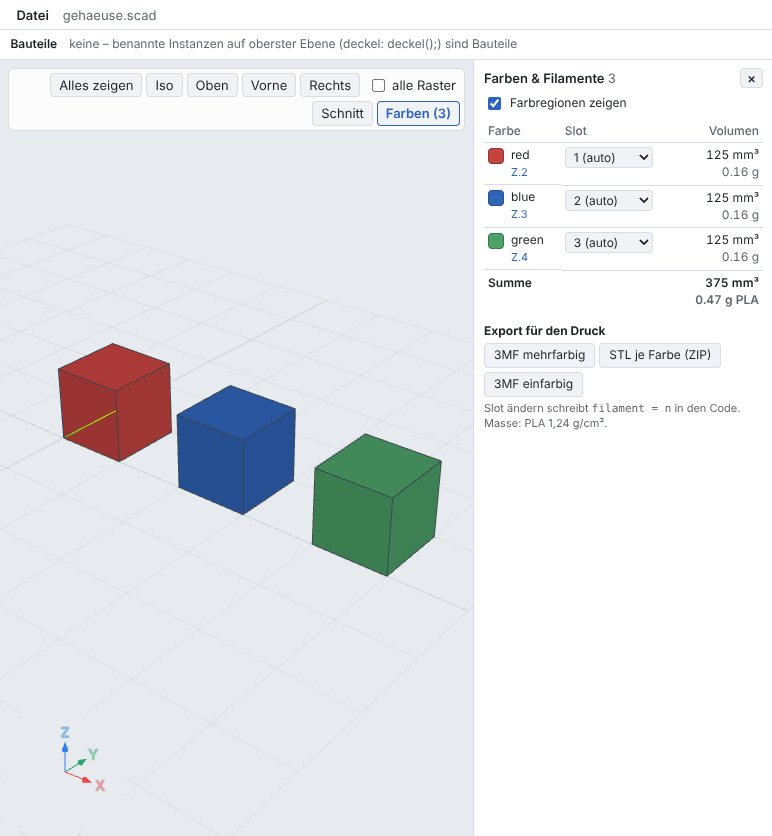
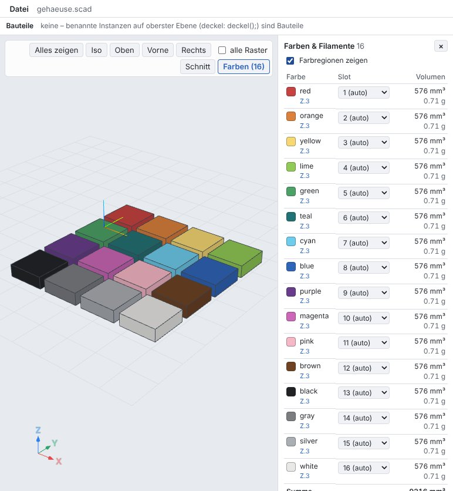
- Regionen: 9960 rote, 11988 blaue, 13119 grüne Pixel
- je Fläche: 9960 rote, 11988 blaue, 13119 grüne Pixel
- Palette: 2381 petrolfarbene, 2939 magentafarbene Pixel, 16 Regionen
G02 F2: Slot einer Farbe aus einem Parameter
slot_mod.scad: module bar(c) color(c) …; Slot 4 für red schrieb vorher filament = 4 an color(c) – alle drei Farben bekamen Slot 4. Jetzt schreibt die UI filament("red", 4); in die Datei; blue und green bleiben automatisch. „automatisch“ entfernt die Zeile wieder.
- Text enthält filament("red", 4); und kein filament = 4
- Slots red 4 (fest), blue 1, green 2
- automatisch: Text wie vorher
G03 F3: Ansicht = Druck
r_fillet2.scad: die Verrundung zwischen rot und blau war grau gezeigt und rot exportiert, jetzt rot gezeigt. r_overlap3.scad: die spätere Farbe (blau) besitzt die Überlappung, auch in der Ansicht. r_extrude.scad: color() im 2D-Profil färbt die Extrusion (rot, blau); gemischte 2D-Farben unter einer Extrusion werden nicht getrennt – Warnung, Standard.
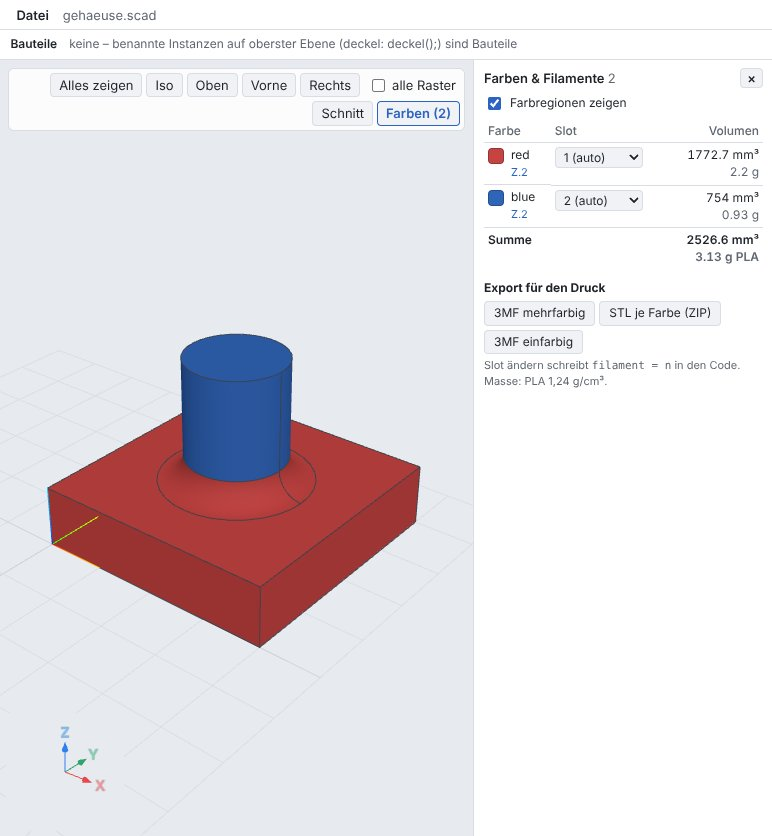
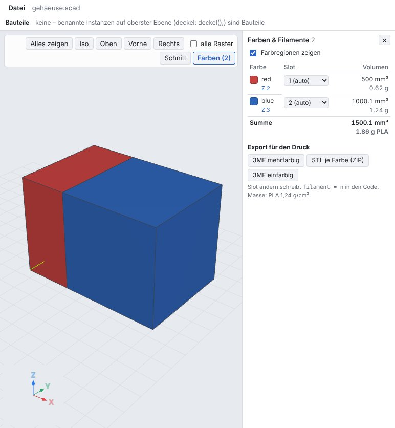
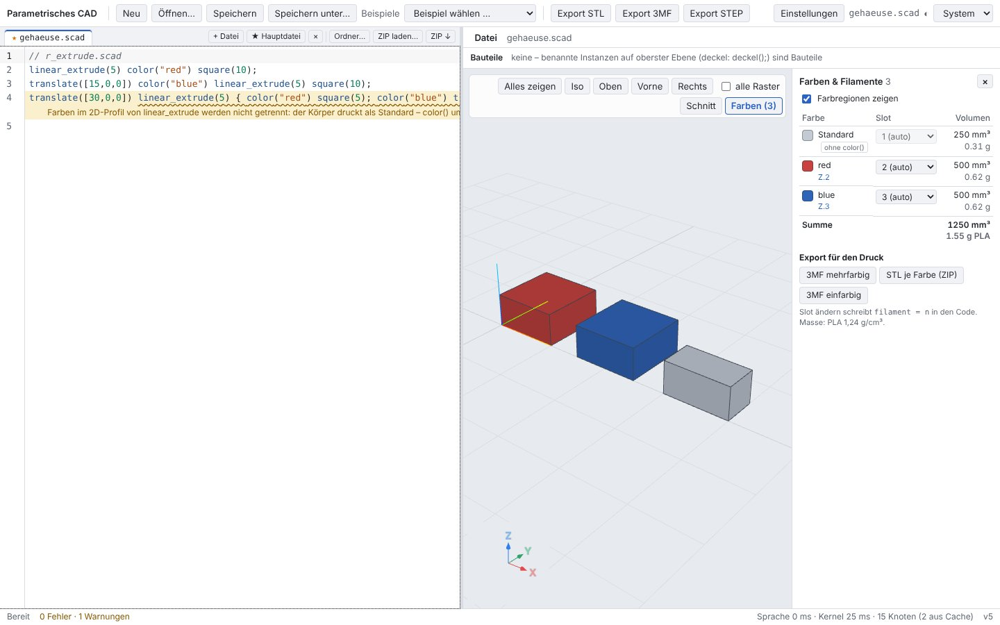
- 48752 rote Pixel an Platte und Verrundung
- Überlappung: 78063 blaue > 21943 rote Pixel
- Warnung „Farben im 2D-Profil …“ in Zeile 3, Liste Standard, red, blue
G04 F4: Material ohne Bauteil, 3MF für Bambu Studio
Ein Bauteil teil und ein gelber Würfel ohne Bauteil: vorher 0 mm³ in der Liste und im UI-Export weggelassen. Jetzt 125 mm³, eigenes Objekt „ohne Bauteil“, gleiche Datei wie cad export. Das 3MF hat keine Farbgruppe mehr: Bambu Studio öffnet keinen Farbdialog und übernimmt die Slots aus model_settings.config.
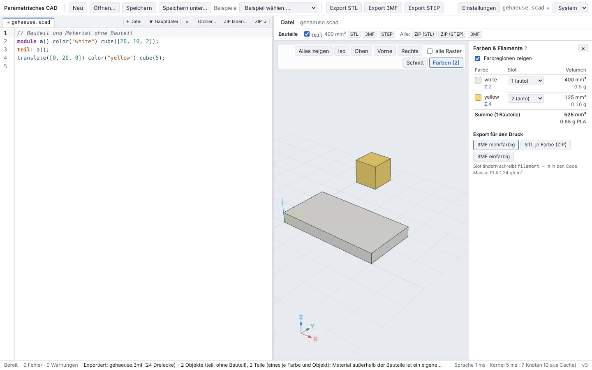
- Objekte teil, ohne Bauteil
- keine m:colorgroup, keine m:color
- Hinweise: 2 Objekte (teil, ohne Bauteil), 2 Teile (eines je Farbe und Objekt); Material außerhalb der Bauteile ist ein eigenes Objekt „ohne Bauteil“; Filament-Slots in Metadata/model_settings.config, ohne Farbgruppe: Bambu Studio und OrcaSlicer übernehmen die Slots ohne Farbdialog
T15 (Tauri) Bericht 12 in Tauri: Farbregionen je Instanz, filament()-Tabelle, Objekt „ohne Bauteil“, 3MF ohne Farbgruppe
- Farben red, blue, green
- kein filament = 4 an color(c)
- Slots red:4, blue:1, green:2
- Objekte teil, ohne Bauteil
- keine Farbgruppe
- Hinweise 2 Objekte (teil, ohne Bauteil), 2 Teile (eines je Farbe und Objekt); Material außerhalb der Bauteile ist ein eigenes Objekt „ohne Bauteil“; Filament-Slots in Metadata/model_settings.config, ohne Farbgruppe: Bambu Studio und OrcaSlicer übernehmen die Slots ohne Farbdialog
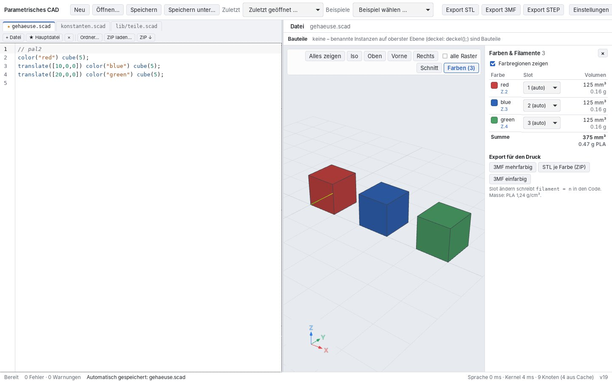
5 Testläufe
| Lauf | Ergebnis |
|---|---|
cargo test --workspace --no-fail-fast | 404 bestanden, 0 fehlgeschlagen |
cargo clippy --workspace --all-targets -- -D warnings · cargo fmt --check | sauber · sauber |
pnpm typecheck · pnpm test (Vitest) | sauber · 195 bestanden |
pnpm e2e (Playwright, Chromium) | 88 / 88 |
Tauri-E2E (web/e2e-tauri/desktop.e2e.mjs) | 15 / 15 |
tests/openscad-compat/compare.py | 33/33 |
tests/step/verify.py | 48/48 passed |
tests/alltag/check.sh (Volumen der Alltagsmodelle) | 19 Modelle, 0 mit Problemen, 175 s, Exporte in /tmp/alltag-d1zsigol (gelöscht) |
Neue Rust-Tests:
long_ipc_dir_uses_short_socket_pathokf4_material_outside_partsokf1_equal_geometry_keeps_its_colour_in_view_and_stepokf3_view_matches_the_printokf6_no_slivers_between_same_coloured_neighboursokf8_slot_remarks_and_single_colourokf9_per_colour_export_and_listokf7_value_rulesokf5_random_colours_keep_their_distanceokall_review_cases_evaluate_and_regions_add_upokcolor_export::tests::no_color_group_by_defaultokfilament_declarationsokrandom_colours_do_not_collide_in_a_modelokfilament_table_rulesokset_filament_of_a_parameter_colour_writes_a_tableokmaterial_outside_parts_is_exportedok
6 Grenzen
- Die Ansicht zeigt die exakten Regionen erst nach ihrer Berechnung (Booleans je Farbknoten, gecacht); bis dahin, beim Ziehen und für den hervorgehobenen Teilbaum unter dem Cursor gilt die genäherte Farbe je Fläche. Ist der Cursor auf einer Anweisung, wird der Rest gedimmt gezeigt (wie bisher).
- STEP teilt keine Flächen an Farbgrenzen (eine verschmolzene Fläche bekommt die Mehrheitsfarbe).
- Gemischte Farben in einem 2D-Profil unter einer Extrusion werden nicht getrennt (Warnung).
- Zufallsfarben, die im Modell ausweichen, hängen von den Namen davor ab.
- Bambu Studio und OrcaSlicer wurden nicht am Programm geprüft, sondern über ihren Quellcode und ein Modell des Importers (
tools/report/verify3mf.py). - Der Ersatz-Socket liegt fest unter
/tmp(nicht$TMPDIR, das selbst lang sein kann).